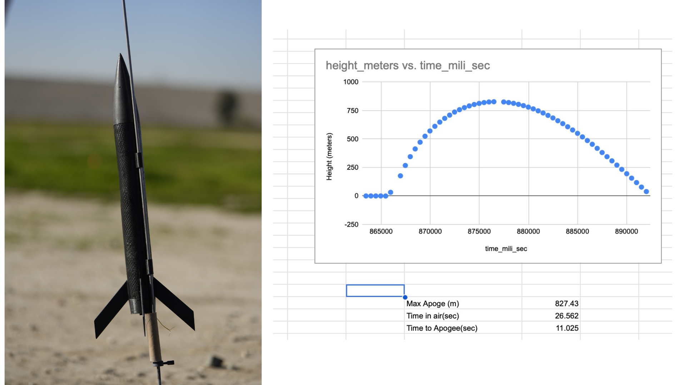
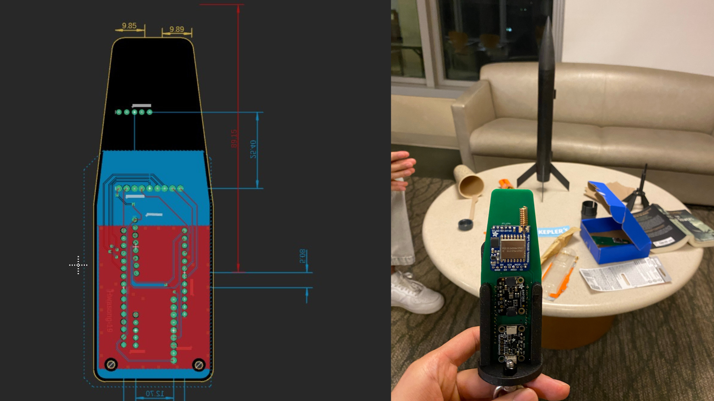
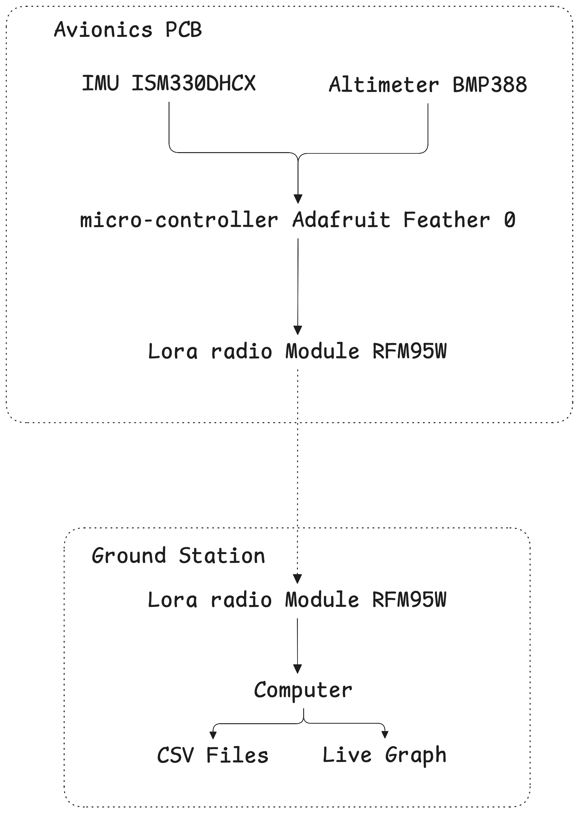
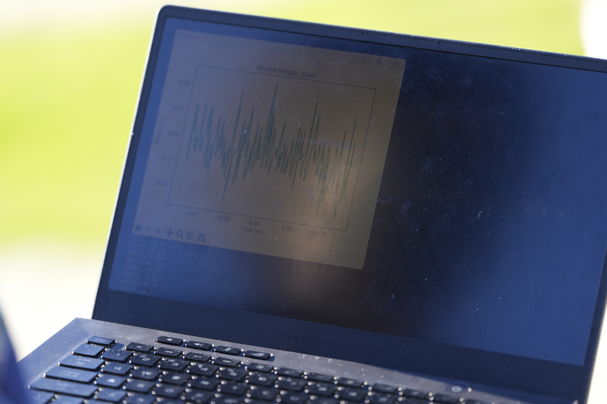
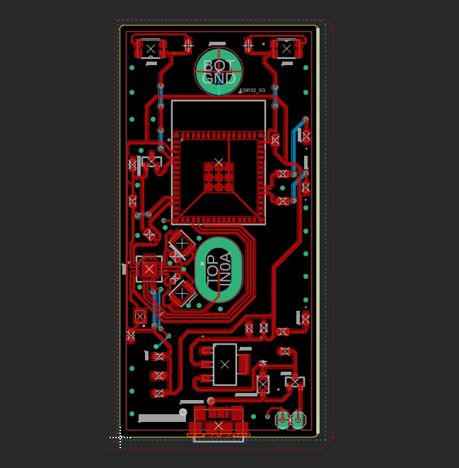
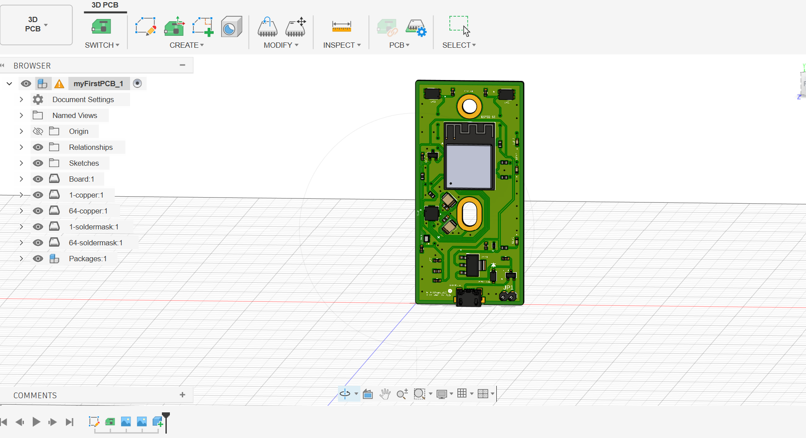

Model Rocket Avionics & Telemetry System
I built an avionics system for a model rocket that was able to measure acceleration and altitude in real time and send that data via radio communication to a ground station I also designed.
The rocket reached over 3,300ft or 1,005 meters which was captured by the live telemetry, before crashing due to a parachute deployment failure.
Embedded Systems • PCB Design • RF Communication • IMU • Low-Power Systems

System Design
The idea was to build an avionics system that could send its current height and acceleration values during flight.
One of the main constraints was the physical size of the nose cone where the electronics were housed. The electronics components included a arduino feather micro controller, lora radio breakout module, an altimeter and an accelerometer. Initially I planned to solder the components onto a simple perf board. But to be within the size constraints I had to put components on both sides of a small board, making the backside of the perf board inaccessible and difficult to solder and wire.
Due to these space constraints I decided to design my own PCB. This was the first PCB I had ever designed, and I used the software fusion 360. The PCB is simple, with traces that connect the difference through holes where the breakout board would fit. The hardest challenge was actually creating these through holes to size since I wasn’t able to import these modules footprints directly from the datasheet/documentation. I had to create my own custom footprints for each breakout board.
I wrote the embedded firmware in c++ responsible for coordinating the avionics system, including sensor acquisition, telemetry, and communication with the ground station. I structured the software around two primary operating states: a low-power standby state, where the system periodically checked for a ground-station command, and an active state where the microcontroller sampled the onboard IMU and altimeter and formatted the measurements into telemetry packets, and transmitted them over the LoRa link at approximately 2 Hz.


Power Management & Remote Wake-Up
One of the last minute engineering challenges was saving the battery life of the LiPo battery before launch. The nose cone of our rocket had to be glued onto the main frame the day before launch to allow the glue to set. This meant I wouldn't be able to access a physical on switch before launch. Therefore I designed a digital ON switch.
During transmission the avionics system drew about 140mA of current, most of which came from the LoRa radio which was on the highest decibel setting for maximum range and transmitted every 500ms for about 50ms. Taking the radio frequency into account the average is somewhere around 35mA. For our 500mAH battery this corresponded to roughly 14 hours which likely wouldn't have lasted until launch.
To solve this problem I designed a sleep state. In this state all the sensors would be turned off and the radio trasnmitter would be turned into a receiver that would survey for a handshake code every 5 seconds. In this state the radio’s current and micro controller draws on average roughly .59mA. This amounts to 847 hours of battery life while asleep.
To wake the module up, the ground station which was connected to my computer would wake up on keyboard command and send pulses constantly for 7 seconds. Then it would check if data was coming through. Originally I had it stop sending pulses as soon as an acknowledgment was received however I worried if the acknowledgement failed in transport there's an edge case where the avionics module is in its send state, and the ground station is looking for a handshake back that will never come back. Therefore I just made it listen for comprehensible data as its handshake.

RF Telemetry & Ground Station
For the antenna I chose a ¼ wave dipole due to the limited space in the nose cone. The breakout board for the radio was closest to the tip of the nose cone, and the antenna pointed up at a slight 30 degree tilt off the center line axis for maximum signal strength. I reasoned this would give us maximum signal strength because our rocket would not fly directly up but at an angle. In addition, facing the antenna 90 degrees perpendicular to the rocket, i.e the radiation pattern going straight down, would mean that the other electrical components within the nose cone might interfere with the signal strength.
I transmitted at 20Dbm, which was on the highest setting for the RFM95W Lora module. Since rocket flight was under 30 seconds, and with battery savings pre launch, energy efficiency during flight was not an issue. Therefore I maximized my range.
The ground station was just simply the same lora transceiver and micro controller but programmed differently. Instead of storing data locally, the micro controller sent serial data over to my computer which took the serial data and logged it into a csv file, and graphed altimeter values live using a python script I built. For ease of carrying around I soldered it onto the extra PCBs I designed for the nose cone.
While setting up the radio modules I ran field tests to validate range. I tested the radio by walking half down westward Avenue until the packet loss reached over 80%. The range was about half a mile which served as a useful minimum since it was a busy street. The actual range was likely much more.

After: Rocket Project at UCLA
After working on the model rocket, I joined the Rocket Project at UCLA which builds hybrid and liquid fuel rockets. I joined the Prometheus team to work on a hybrid rocket as a part of the avionics team.
As part of my application process I designed a custom PCB, from a bill of materials(BOM). Building on where I started from my first PCB, I began learning more PCB fundamentals.

